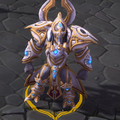
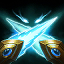
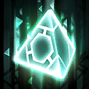
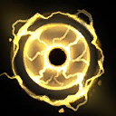
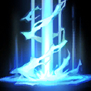
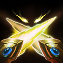
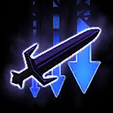

Artanis
Welcome to our Artanis guide for Heroes of the Storm. Here you will learn everything you need to know in order to play Artanis in a competitive environment, whether you play on your own or with a team.
Defensive Tank Build
| Level 1 | Level 4 | Level 7 | Level 10 | Level 13 | Level 16 | Level 20 |
|---|---|---|---|---|---|---|
|  |  |  |
The Tank Build focuses mainly on Artanis' own survivability and his ability to absorb as much incoming damage as possible. As such, defensive talents like Reactive Parry Icon Reactive Parry or Shield Surge Icon Shield Surge are crucial. Since Artanis' main source of self-protection is his Shield Overload Icon Shield Overload Trait, lowering its cooldown by using Basic Attacks makes Triple Strike Icon Triple Strike a powerful choice.
Prism Bruiser Build
| Level 1 | Level 4 | Level 7 | Level 10 | Level 13 | Level 16 | Level 20 |
|---|---|---|---|---|---|---|
|  |  |  |
The Prism Bruiser Build emphasizes Artanis' strong damage potential. Warp Sickness Icon Warp Sickness enables Artanis to chase his targets more efficiently, which also synergizes very well with his Purifier Beam Icon Purifier Beam Heroic Ability at Level 10. While Artanis' early game can sometimes be a little rough, talents like Graviton Vortex Icon Graviton Vortex at Level 13 and Titan Killer Icon Titan Killer at Level 16 mark a significant late game power spike.
PvE Objective Build
| Level 1 | Level 4 | Level 7 | Level 10 | Level 13 | Level 16 | Level 20 |
|---|---|---|---|---|---|---|
 |
The Prism Bruiser Build emphasizes Artanis' strong damage potential. Warp Sickness Icon Warp Sickness enables Artanis to chase his targets more efficiently, which also synergizes very well with his Purifier Beam Icon Purifier Beam Heroic Ability at Level 10. While Artanis' early game can sometimes be a little rough, talents like Graviton Vortex Icon Graviton Vortex at Level 13 and Titan Killer Icon Titan Killer at Level 16 mark a significant late game power spike.
Go Back